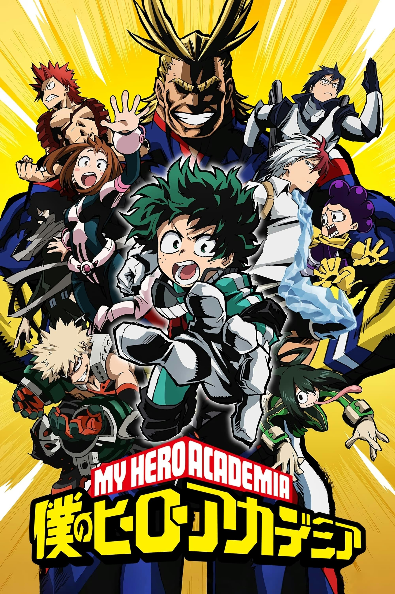

UNOFFICIAL FAN STORY · CHAPTER 01
My Hero Academia
A student who doubts their own talent joins a rescue exercise and discovers that heroism begins with noticing what others need.
Chapter One: A New Beginning
The training arena filled with smoke from harmless practice flares. Students rushed toward the marked finish line, but Izuku noticed a small signal light blinking beneath a collapsed prop wall.
The exercise had changed: one training dummy was now hidden in the rubble. Izuku called for a teammate with a strength-enhancing ability and another who could clear the smoke. Together they lifted the prop safely and carried the dummy to the rescue zone.
Their team finished last, but the instructor praised their decision to stop and check the warning signal. Speed was useful; attention was essential.
Izuku wrote the feedback on his notebook’s first page. A hero was not simply the person who arrived first. A hero was the person who made sure no one was left behind.
This is an unofficial, original fan-made story and is not affiliated with the official creators or publishers.